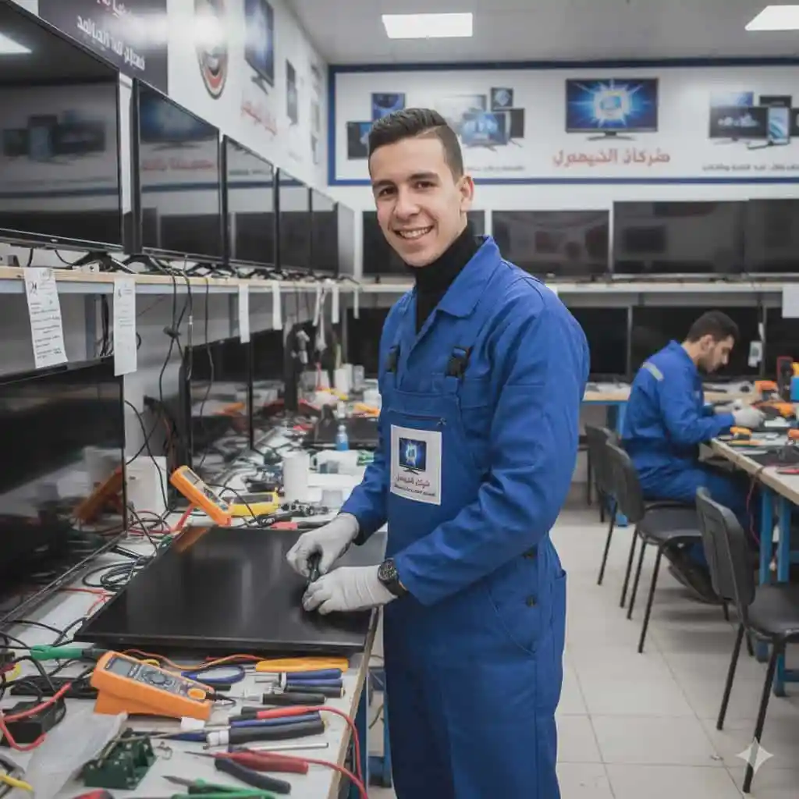
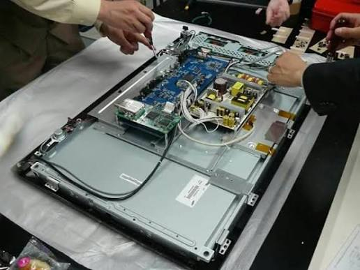

الشاشة هي نافذة الترفيه والمعلومات الأساسية في كل منزل، وتعمل بجهد كبير لتقديم أفضل جودة صورة وصوت. ولأنها تعتمد على لوحات إلكترونية دقيقة، وبانل متطور، ودوائر إضاءة معقدة، فإنها ترسل إشارات إنذار مبكرة قبل أن تتوقف تماماً؛ ومن أبرز هذه العلامات ظهور خطوط راسية أو أفقية، انقطاع الصورة مع وجود صوت، ظهور شاشة سوداء تماماً، بقع داكنة أو مضيئة، تأخر في الاستجابة للريموت، أو انطلاق قاطع الكهرباء فور تشغيل الجهاز.
كل علامة من هذه العلامات توضح أن هناك مكوناً يعمل خارج نطاق كفاءته التصميمية، والتدخل المبكر يحمي قطع الغيار الرئيسية مثل البانل، كارتة الإضاءة (البورده)، أو اللوحة الأم (ماين بورد) من التلف الكامل ويحافظ على ميزانيتك وسلامة منزلك.
تخضع الشاشات والتلفزيونات لظروف تشغيل صعبة مع تكرار الاستخدام لفترات طويلة يومياً، إلى جانب تذبذب التيار الكهربائي المفاجئ وارتفاع درجات الحرارة والرطوبة، وهي عوامل تسرع من إجهاد اللوحات الإلكترونية وتؤثر على كفاءة الإضاءة الخلفية للبانل.
هذه الظروف تجعل لمبات الليد (Backlight)، وbوردة الباور، والماين بورد تعمل بجهد مضاعف، ولهذا فإن أغلب بلاغات الأعطال تتعلق باحتراق ليدات الإضاءة، أعطال الباور، أو مشاكل اللوحة الأم، وهي مشاكل نحلها بمهنية في زيارة منزلية واحدة.
الشاشة تعتمد على منظومة ذكية تبدأ باستقبال التيار الكهربائي عبر بوردة الباور لتوزيع الجهود المناسبة، بينما تتولى اللوحة الأم (Main Board) معالجة إشارات الفيديو والصوت، ونقل البيانات بدقة إلى الشاشة (البانل) ووحدات الإضاءة الخلفية لإظهار الصورة بوضوح.
أي خلل في هذه المنظومة يتسبب في انطفاء الشاشة، فقدان الصورة، أو توقف النظام الذكي عن الاستجابة.
الشاشات العادية واقتصادية السعة توفر أداءً ممتازاً وموثوقاً للاستخدام اليومي التقليدي ومتابعة البث المباشر بأقل استهلاك للطاقة.
أما شاشات الـ Smart الحديثة المزودة بتقنيات (QLED و OLED) فتتميز بقدرتها الهائلة على تقديم ألوان فائقة الوضوح، تباين مذهل، وتجربة مشاهدة سينمائية متكاملة مع تطبيقات البث والتوصيل الذكي، لكنها تتطلب عناية خاصة ومعاملة دقيقة أثناء الصيانة والتركيب.

فحص اللوحات الإلكترونية وبوردة الباور
إصلاح وصيانة الشاشات بالمنزلالفارق بين تركيب قطعة غيار أصلية وأخرى مقلدة يظهر سريعاً في جودة الصورة وعمر الشاشة الافتراضي. تلتزم المؤسسة المعتمدة بتوريد وتركيب ليدات أصلية، بوردات طاقة، وقطع إلكترونية معتمدة 100% مع فاتورة رسمية، ويشمل الضمان ستة شهور كاملة على القطعة وعلى المصنعية المنفذة، مع زيارة مجانية تماماً إذا تكرر نفس العطل.
غالباً يرجع لاحتراق ليدات الإضاءة الخلفية (Backlight) أو عطل في دائرة الإنفيرتر المسؤولة عن تغذية الإضاءة.
بسبب تلف في كوفاسات (COF) الخاصة بالبانل أو وجود مشكلة داخلية في شاشة العرض نفسها.
نعم، 90% من أعطال الشاشات (تغيير الليدات، أعطال الباور، السوفت وير، ومشاكل الماين بورد) يتم إنجازها باحترافية تامة داخل منزلك بأمان تام.
يحدث عادة بسبب احتراق بوردة الباور نتيجة تذبذب التيار الكهربائي أو تلف الفيوز الرئيسي.
نعم بشدة، لحماية اللوحات الإلكترونية الحساسة وبوردة الباور من الارتفاع المفاجئ للتيار الكهربائي.
تواجه مشكلة في جهازك؟ اختر العطل من القائمة أدناه لمعرفة الأسباب المحتملة وطرق الإصلاح، أو اتصل بنا مباشرة على 19580
الجهاز يعمل ويصدر صوتاً طبيعياً ولكن الشاشة مظلم تماماً.
الأسباب المحتملة: احتراق الليدات الخلفية، أو عطل بدائرة الإنفيرتر.
الشاشة صامتة تماماً ولمبة البيان لا تضيء.
الأسباب المحتملة: تلف بوردة الباور، احتراق الفيوز، أو قصر بالدائرة.
خطوط سوداء أو ملونة تقطع مساحة الشاشة طولياً أو عرضياً.
الأسباب المحتملة: تلف كوفات البانل أو عطل في الشاشة الداخلية.
يفصل التيار بالمنزل بمجرد توصيل الشاشة أو فتحها.
الأسباب المحتملة: قصر دائرى في بورده الباور أو تلف مكثف رئيسي.
النظام الذكي يتوقف عن الاستجابة أو لا يتجاوز شاشة البداية.
الأسباب المحتملة: تلف السوفت وير، أو عطل في اللوحة الأم (الماين).
أجزاء من الصورة تظهر مظلمة أو بقع مضيئة مزعجة.
الأسباب المحتملة: انفصال عدسات الليد الداخلية عن مكانها.
الشاشة لا تستجيب لأوامر التشغيل أو تغيير القنوات.
الأسباب المحتملة: تلف عين الاستشعار، أو مشكلة في سوفت وير اللوحة.
الأسعار المذكورة تقديرية لأعطال الشاشات وتختلف حسب الموديل ومقاس البوصة، ويتم إبلاغك بالسعر النهائي بعد الفحص وقبل بدء الإصلاح.
صيانة شاشات سامسونج (Samsung) خدمة منزلية كاملة يصل فيها إليك فني متخصص مجهز بالمعدات الحديثة وقطع الغيار الأصلية، ليتم الإصلاح أمامك من الزيارة الأولى، وهي الخدمة التي نالت بها المؤسسة المعتمدة ثقة آلاف العملاء.
فريقنا الفني منتشر في مختلف المحافظات والمناطق، لنضمن الوصول إليك أينما كنت في أسرع وقت ممكن.
التكلفة عندنا شفافة بالكامل: رسوم كشف معلنة وثابتة، وتكلفة إصلاح يتم الاتفاق عليها بعد التشخيص وقبل بدء أي عمل؛ لا توجد رسوم مخفية أو مفاجآت، وتحصل على فاتورة رسمية بكل التفاصيل.
قبل أي إصلاح نجري فحصاً شاملاً يشمل قياس الجهود، اختبار بوردة الباور، ومراجعة دوائر الإضاءة؛ هذا التشخيص الدقيق يضمن معالجة السبب الجذري للعطل.
خدمتنا متاحة طوال أيام الأسبوع. اتصل الآن على 19580 واحصل على خدمة صيانة فورية ومضمونة.
صيانة شاشات إل جي (LG) بمعايير احترافية: كشف دقيق بأجهزة قياس حديثة، قطع غيار أصلية مناسبة لكل موديل، وفني مدرب يشرح لك سبب العطل قبل أي إصلاح — هذا ما يحصل عليه عملاء المؤسسة المعتمدة في كل زيارة.
نلتزم بتقديم تقرير فني مفصل عن حالة الشاشة والأجزاء التي تحتاج إصلاحاً أو استبدالاً، مع فاتورة رسمية وضمان مكتوب على كل عملية صيانة.
تشمل خدمتنا جميع أنواع أعطال الشاشات دون استثناء: ليدات الإضاءة، بوردات الباور، اللوحات الأم، بالإضافة إلى أعمال الصيانة الدورية التي تطيل عمر الجهاز.
كل إصلاح مشمول بضمان شامل على العمل والقطع، وأسعارنا عادلة ومعلنة بدون أي زيادات. اطلب فنياً الآن على 19580.
صيانة شاشات توشيبا (Toshiba) خدمة منزلية متكاملة يصل فيها إليك فني متخصص مجهز بأحدث أدوات الفحص وقطع الغيار الأصلية، ليتم الإصلاح أمامك من الزيارة الأولى.
يستخدم فنيونا أجهزة القياس والتشخيص الإلكتروني لتحديد الأعطال بدقة متناهية، مما يوفر عليك الوقت والمال ويضمن إصلاحاً صحيحاً من المرة الأولى.
فريق خدمة العملاء متاح يومياً للرد على استفساراتك وتحديد المواعيد بمرونة تامة عبر الهاتف أو الواتساب أو من خلال موقعنا الإلكتروني.
نمنح ضماناً حقيقياً على الإصلاح وقطع الغيار المستبدلة يصل إلى 6 شهور كاملة. للحجز اتصل بالخط الساخن 19580.
عندما يتعطل جهازك فجأة فأنت تحتاج صيانة شاشات تورنيدو (Tornado) من جهة موثوقة تصلك بسرعة؛ لهذا يعتمد آلاف العملاء على الفنيين المعتمدين لدى المؤسسة المعتمدة في إصلاح أعطالهم داخل المنزل دون نقل الشاشة.
لدينا خبرة تراكمية واسعة في إصلاح جميع أعطال الشاشات مهما كانت بسيطة أو معقدة، بما في ذلك مشاكل الإضاءة والباور والخطوط.
قبل أي إصلاح نجري فحصاً دقيقاً يشمل اللوحات ونظام الطاقة؛ لضمان معالجة المشكلة من جذورها وعدم تكرارها نهائياً.
لا تتردد في التواصل معنا على 19580 للحصول على استشارة فنية مجانية وحجز موعد الصيانة في الوقت المناسب لك.
صيانة شاشات شارب (Sharp) لم تعد مهمة صعبة أو مكلفة؛ فبفضل شبكة فنيين تغطي جميع المناطق وخبرة طويلة، توفر لك المؤسسة المعتمدة إصلاحاً سريعاً بقطع أصلية وأسعار عادلة ومعلنة.
نلتزم بتقديم تقرير فني مفصل عن حالة الشاشة والأجزاء التي تحتاج صيانة، مع فاتورة رسمية وضمان مكتوب على الخدمة.
تشمل خدمتنا كافة أعطال الشاشات الكبيرة والصغيرة مع توفير حلول فورية لكل المشاكل الفنية بالمنزل.
كل إصلاح مشمول بضمان شامل، وأسعارنا واضحة وثابتة. اطلب فنياً الآن على 19580.
صيانة الشاشات الذكية خدمة منزلية متخصصة تتعامل مع اللوحات الإلكترونية المتقدمة والكارتات الذكية بأعلى كفاءة، مع توفير قطع الغيار الأصلية المعتمدة وبرامج التشغيل الأصلية.
فريقنا مدرب خصيصاً على التعامل مع التقنيات الحديثة في الشاشات لتوفير تشخيص سريع وإصلاح دقيق من الزيارة الأولى.
نقدم ضماناً معتمداً لمدة 6 شهور على جميع أعمال الإصلاح والقطع المستبدلة لراحة بالك التامة. اتصل بنا على 19580.
نغطي محافظات الدلتا بالكامل. اختر محافظتك أو مدينتك.
سواء بتقول صيانة شاشات أو بأي صيغة تانية، الخدمة واحدة والرقم واحد: 01289966660
كل فني مدرب على أعطال الشاشات، دوائر الباور، الليدات، والبانلات تحديداً والمكونات الدقيقة، وليس فنياً عاماً لكل شيء.
نستخدم قطع غيار أصلية ومضمونة 100% مع إطلاعك على القطعة القديمة قبل استبدالها.
ضمان مكتوب على المصنعية وقطع الغيار، وإعادة الزيارة مجاناً لو تكرر نفس العطل.
نود التوضيح الكامـل لعملائنا الكرام أن مؤسسة المعتمد جروب هي مركز خدمة وصيانة معتمد خارجي للأجهزة المنزلية، ولسنا الشركة الرئيسية أو الوكيل الحصري المصنّع للعلامات التجارية المختلفة؛ نحن نقدم خدمات الصيانة الفورية، الإصلاح، وتوفير قطع الغيار الأصلية بكفاءة عالية وبخبرة فنية متخصصة لراحة عملائنا.
في مؤسسة المعتمد جروب، نُدرك تماماً أهمية خصوصيتك ونلتزم التزاماً كاملاً بحماية بياناتك الشخصية بكل أمان وشفافية تامة أثناء طلبك لخدمات الصيانة المنزلية.
جميع البيانات التي تقدمها لنا (مثل: الاسم، رقم الهاتف، والعنوان التفصيلي) تُستخدم حصرياً لتنفيذ طلب الصيانة وتوجيه الفريق الفني المعتمد لمنزلك في أسرع وقت، ولا يتم مشاركتها أبداً مع أي طرف ثالث.
نستخدم أحدث تقنيات التشفير الرقمي وبروتوكولات الأمان لضمان حماية وسائط الاتصال بين جهازك وموقعنا، مما يمنع أي محاولات لاعتراض أو استطلاع بياناتك أثناء التصفح أو إرسال طلبات الصيانة.
تستعين منصة المعتمد جروب بملفات تعريف الارتباط البسيطة لتحسين تجربتك في تصفح الموقع، تذكر تفضيلاتك، وتقديم محتوى ملائم وسريع يلبي احتياجاتك الفنية فوراً.
قد نستخدم رقم هاتفك للتواصل معك فقط بشأن حالة طلب الصيانة الخاص بك، أو إرسال تفاصيل الفاتورة والضمان المعتمد، مع الاحتفاظ بحقك الكامل في طلب مراجعة، تعديل، أو حذف بياناتك في أي وقت.